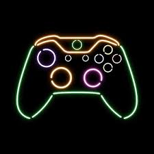
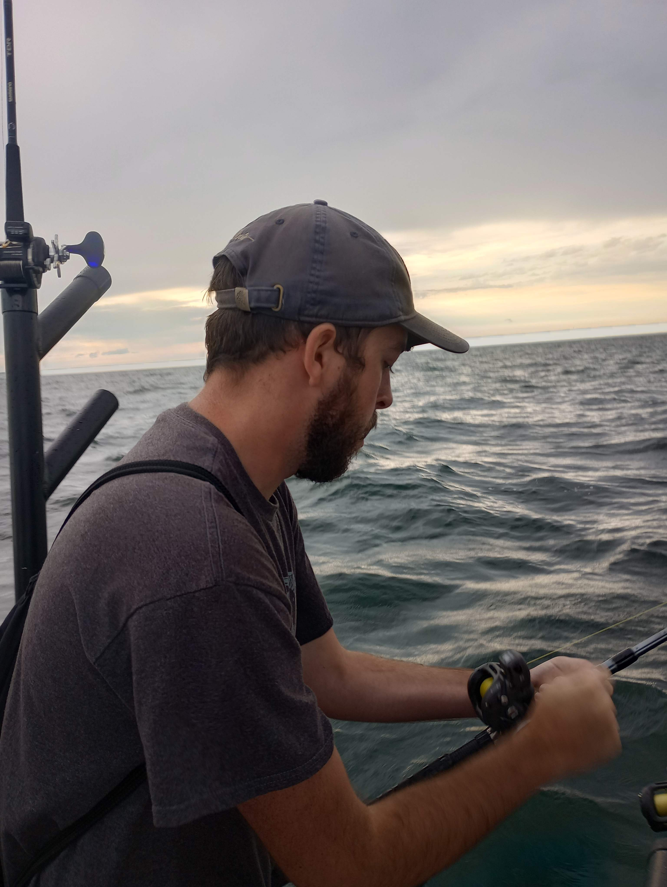
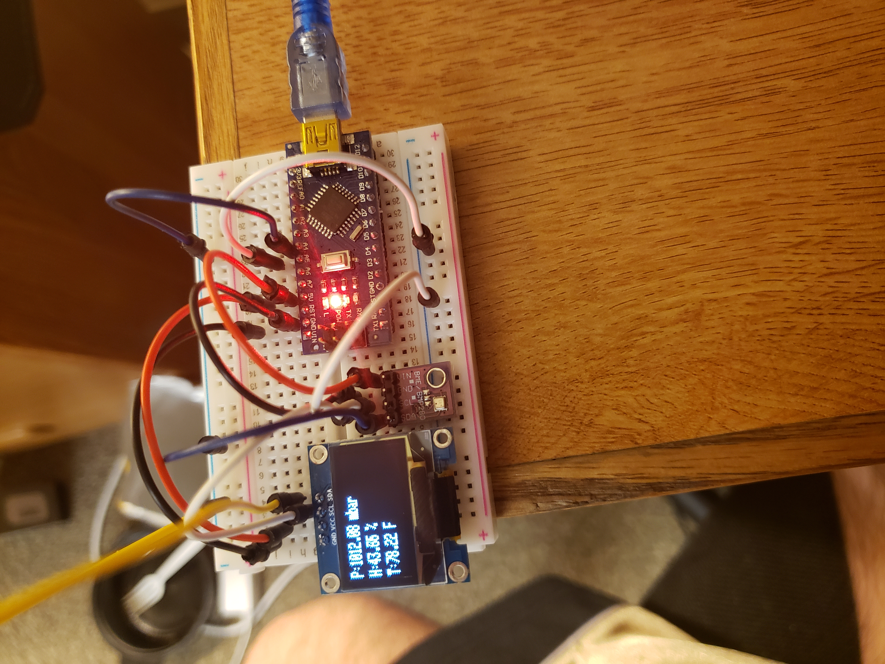

Video Games
I like FPS and survival titles for fun. Great for relaxing and learning design patterns.
A few things I enjoy outside of classes and projects.

I like FPS and survival titles for fun. Great for relaxing and learning design patterns.

Weekend trips when the weather’s good. I enjoy the quiet problem-solving—reading water, bait choice, and timing.

From troubleshooting to small builds. I enjoy understanding systems end-to-end and keeping notes on fixes.